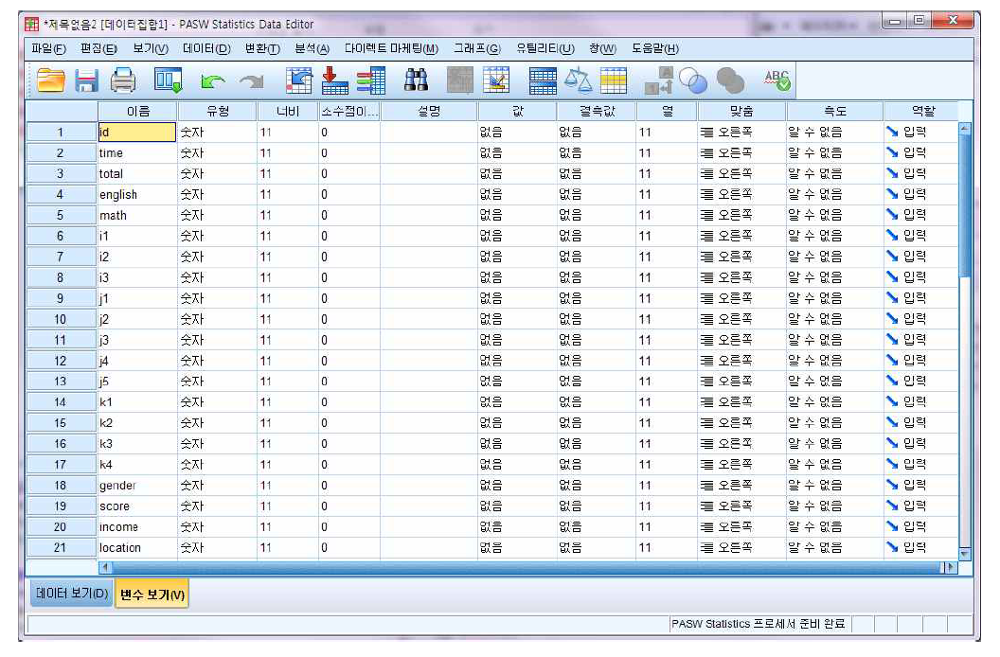
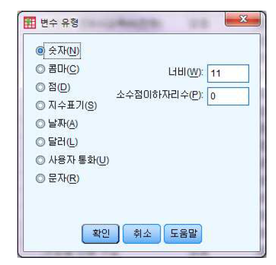
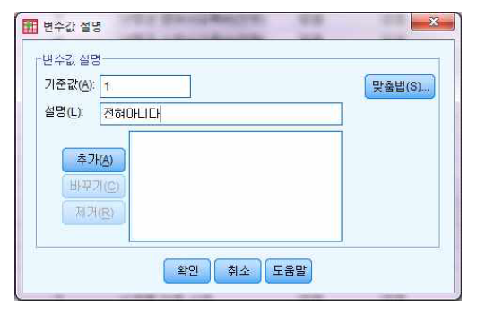
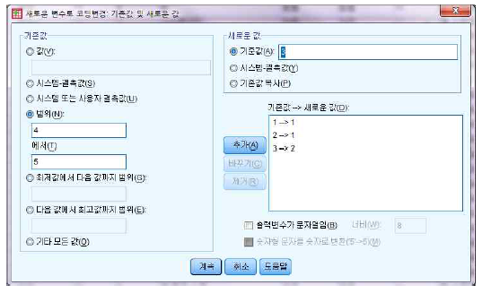
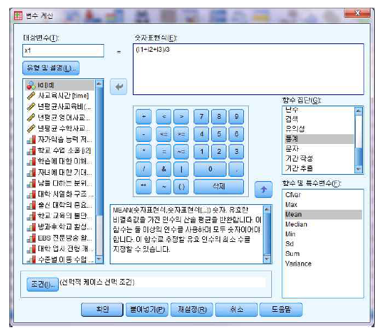
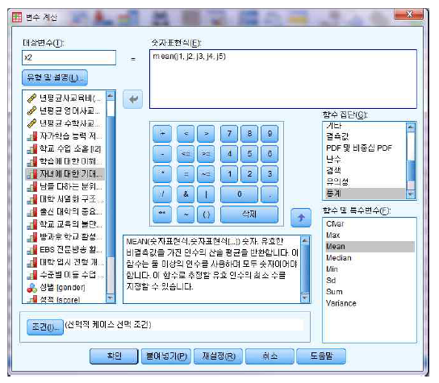
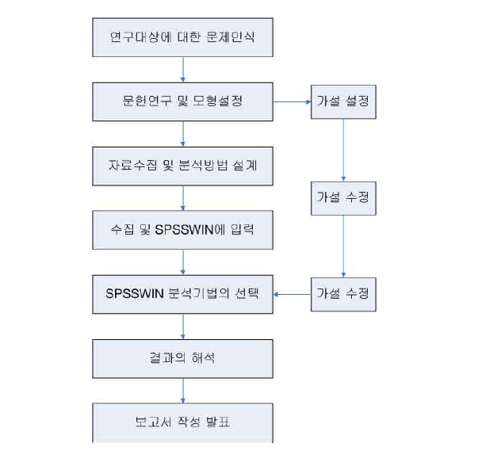

Chapter 3 데이터 편집기
여기에서는 데이터 입력이나 저장시에 알아두어야 할 부분을 설명한다.
3.1 변수 정의

SPSS 데이터 편집기창에는 이름(Name), 유형(Type), 자릿수(Width), 소수점이하자리(Decimals), 설명(Label), 값(Values), 결측값(Missing), 열(Columns), 맞춤(Align), 측도(Measure) 등 10가지 선택 메뉴가 있다.
변수 이름
변수 이름이 표시되며, 할당된 변수가 없으면 자동으로 이름을 할당한다.변수 유형
변수 유형은 관측 자료를 표기하는 방식을 설명해준다. 일반적으로 SPSS의 변수값들은 숫자(Numeric)형식으로 간주하나, 적합한 통계분석을 위해서 변수의 형식을 임의로 바꿀 수 있다. [유형]의 ‘숫자’를 선택하고 […] 단추를 누르면 여러 가지 유형을 선택할 수 있게 된다.

숫자 : 변수의 값이 수치인 경우
콤마 : 3자리마다 콤마를 표기하는 경우(예 : 1,234.56)
점 : 세자리마다 점을 표기하는 경우(예 : 1.234,56)
지수표기 : 지수형식으로 표기하는 경우(예 : 1.2E+3)
날짜 : 날짜 및 시간으로 표기하는 경우
달러 : 미국화폐를 접두어로 표기하는 경우(예 : $1,234.56)
사용자 통화 : 옵션대화상자의 통화탭에서 정의한 사용자 정의 통화형식으로 표시된 숫자변수
문자열 : 문자, 숫자, 특수문자를 표기하는 경우설명 정의
변수이름과 변수값에 대한 이해를 돕기 위해 사용되는 설명문이다. 설명의 종류에는 변수의 의미를 설명하는 변수값 설명이 있다. 예를 들어‘k1’ 방과후 학교 활성화를 설명하기 위해 [설명]에 ’방과후 학교 활성화‘를 입력한다.설명값

[값] 밑에 있는 ‘숫자’를 선택하고 [...] 단추를 누르고 ‘변수값’란에 k1변수가 가질 수 있는 값인 1부터 5까지의 값을 하나씩 “1 = 전혀아니다”와 같은 방법으로 입력을 한다.결측값
결측값은 설문에 응답하지 않아서, 코딩시에 여백으로 또는 특별한 수치(예를 들어 999) 등으로 처리한 경우를 의미한다. 결측값의 종류에는 시스템 결측값과 사용자 결측값의 두가지가 있다. - 시스템 결측값 : 응답치가 공백으로 처리된 경우, 이를 시스템 결측값이라고 한다. 이 무응답치는 점(.)으로 표시된다. - 사용자 결측값 : 응답치가 구체적으로 어떻게 누락되었는가를 나타내기 위해 사용되는 경우이다. 설문조사에서 ‘잘모르겠음’은 99, ‘해당없음’은 999,‘응답거부’는 9999 등으로 사용자 무응답치를 지정한다.맞춤
맞춤은 편집창의 셀 안에서 자료의 정렬방식을 알려준다.측도
측도는 변수의 척도를 결정하는 방식을 의미한다.척도는 등간척도와 비율척도에 해당되는 변수를 지정할 경우에 사용된다. 순서척도는 서열척도를 지정하는 경우, 명목척도는 분류, 구분하는 경우에 사용되는 척도를 말한다.
3.2 데이터의 편집
편집(Edit)은 데이터의 내용을 수정하거나 복사하는데 사용되는 메뉴이다. 여기서는 데이터 복구하기, 수정하기, 잘라내기, 복사하기, 붙이기 등에 관하여 알아본다.
지워진 데이터 복구하기
입력된 데이터가 지워진 경우, 복구(Undo)를 누르거나, Ctrl+Z를 누르면 원래의 데이터를 복구할 수 있다.입력된 자료의 수정
이미 입력된 자료를 수정하려면 셀에 마우스의 포인트를 이동시켜 자료를 입력한 뒤 Enter키를 누르거나, 화살표의 방향키를 누르면 자료값이 바뀌게 된다.잘라내기, 복사하기, 붙이기
자료를 잘라내거나, 복사하거나, 붙이기를 위해서는 편집(Edit) 메뉴에서 작업을 진행하면 된다.- 잘라내기(Cut) : 잘라내는 범위를 정한 후 편집메뉴에서 [잘라내기]을 누른다.
- 복사(Copy) : 복사하는 범위를 정한 후 편집메뉴에서 [복사]를 누른다.
- 붙여넣기(Paste) : 붙여넣는 범위를 정한 후 편집메뉴에서 [붙여넣기]를 누른다.
3.3 새로운 사례 및 변수의 삽입과 삭제
- 새로운 사례의 삽입이미 입력된 파일에 새로운 사례(Case)를 추가할 경우, 삽입하고자하는 사례(Case) 행을 마우스로 지정하면 해당 행이 검은색으로 반전되어 나타나 있고, 이때, 다음과 같이 진행하면 새로운 행이 추가된다.
데이터(D)
케이스 삽입(I)- 새로운 변수의 삽입 및 삭제
- 새로운 변수 삽입 : Case를 삽입하는 것과 유사하다.
데이터(D)
변수 삽입(V)- 변수 및 사례 삭제변수나 사례를 삭제하고자 할 경우에는 삭제하고자 하는 변수나 사례를 마우스로 선택한 후, Edit 메뉴에서 지우기(Del)을 누르거나, 마우스의 오른쪽 단추를 눌러 잘라내기(Cut)나 지우기(Del)를 선택하면 된다.
3.4 데이터 변환
데이터 변환은 변수계산, 난수시작값, 코딩변경, 시계열변수 생성 등 다양한 작업을 할 수 있게 해준다.
3.4.1 코딩 변경
edu.sav 예제를 이용하여 location변수(지역)의 경우 1(강남)과 2(강북)이 서울로 나타낼 수 있다. 또한 4(중소도시)와 5(읍면지역)을 묶어 중소도시로 표현하고자 한다. 이때 연구자는 5개의 지역이 아닌 3개의 지역으로 구분하여 사교육비를 파악하고 싶을 것이다.
코딩 변경을 위해서 다음과 같이 실행한다.
변환(T)
코딩변경(R)
새로운 변수로(D)...조건(If)는 논리조건에 따라 데이터 집단군에 대한 값을 선택적으로 변환하는데 사용되는 키워드이다. 출력변수창에서 이름(Name)란에 “location1”이라고 입력하고 기존값 및 새로운 값(Old and New Values)을 지정한다.

location 변수 중에서 ‘1=강남’은 기존값(Old Value)과 새로운 값(New Value)이 같기 때문에 모두 ‘1’을 입력하고, 추가(Continue)를 누르면 지정이 끝난다.

다음으로 ‘4=중소도시’와 ‘5=읍면지역’을 하나의 값(중소도시)으로 인식하기 위해서 범위(Range) 단추를 누르고 4에서 5를 입력하고, 새로운 값에 3를 입력한다.
결과적으로
1=강남 ⇒ 1=서울
2=강북 ⇒ 1=서울
3=광역시 ⇒ 2=광역시
4=중소도시 ⇒ 3=중소도시
5=읍면지역 ⇒ 3=중소도시
으로 변경한다.
3.4.2 변수 만들기(Compute)
사교육 실태 및 의식 조사에 대한 설문지에서 통화품질, 서비스, 이미지는 각각 다항목으로 측정되었다. 이 요인들을 하나의 변수로 만들려면 다음과 같이 하면 된다.
사교육영향 = ( 자가학습 능력 저하 + 학교 수업 소홀 + 학습에 대한 이해력 향상 )= ( i1 + i2 + i3)
사교육 증가원인 = ( j1 + j2 + j3 + j4 + j5 )
사교육 감소원인 = ( k1 + k2 + k3 + k4 )여기서, 유의할 점은 변수들이 설명하는 타당성과 신뢰성이 확보되어야만, 이 계산이 유효하다는 점이다.
SPSS에서 새로운 변수 를 만드는 방법은 다음과 같다.
변환(T)
변수 계산(C)

함수 집단(Function group)에서 통계관련 함수를 찾기 위해서 통계(Statistical)을 선택하면 함수 및 특수변수(Functions and Special Variables)에 세부적인 함수들이 나타난다.
3.5 자료처리 분석 절차
연구자가 자신의 연구목적을 달성하기 위하여 통계기법을 사용하고자 하는 경우에 다음과 같은 일반적인 절차를 거치게 된다.
